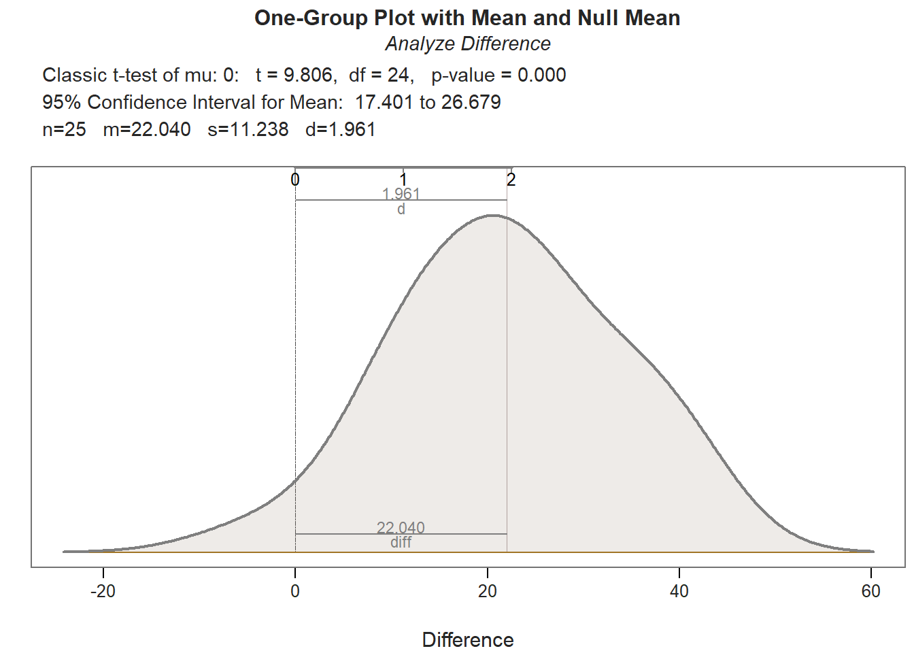

Chapter 73 Evaluating a Pre-Test/Post-Test with Control Group Design Using an Independent-Samples t-test
In this chapter, we will learn how to evaluate a pre-test/post-test with control group design using an independent-samples t-test with a difference score outcome variable. A pre-test/post-test with control group design is also referred to as a 2x2 mixed-factorial design. Using an independent-samples t-test with a difference score outcome variable is appropriate when there are the same sub-sample sizes in the training and control conditions. In the chapter supplement, we will learn how this analysis, under these conditions, is statistically equivalent to a mixed-factorial analysis of variance (ANOVA). We will begin this chapter by introducing the concepts related to mixed-factorial ANOVA before discussing the independent-samples t-test as a viable alternative.
73.1 Conceptual Overview
Factorial analysis of variance (ANOVA) is part of a larger family of analyses aimed at comparing means, and it used to compare the means for two or more categorical (nominal, ordinal) predictor (independent) variables (e.g., conditions, populations). The word factorial in ANOVA implies that there are two or more factors (i.e., categorical predictor variables). Just like a one-way ANOVA, a factorial ANOVA has a single continuous (interval, ratio) outcome (dependent) variable. A factorial ANOVA with just two factors, is often referred to as a two-way ANOVA, where the two refers to two factors. A factorial ANOVA can include within-subjects factors, between-subjects factors, or a combination of the two. When we have at least one within-subjects (e.g., repeated measurements for same cases) factor and at least one between-subjects (e.g., each case assigned to just one level of factor), we commonly refer to this as a mixed-factorial ANOVA.
A common example of a 2x2 mixed-factorial design in the training evaluation context is as follows. Each trainee is randomly assigned to one (and only one) level of a between-subjects training condition factor (condition levels: training, control), but every trainee completes both levels of a within-subjects assessment factor (test time levels: pre-test, post-test). A 2x2 mixed-factorial ANOVA would be an appropriate statistical analysis for this design, and in the training context, we often refer to this design as a pre-test/post-test with control group design.
| Pre-Test | Post-Test | |
|---|---|---|
| Training | Training / Pre-Test | Training / Post-Test |
| Control | Control / Pre-Test | Control / Post-Test |
When we have a mixed-factorial design, we are typically interested in looking at the interaction between the two or more factors (i.e., predictor variables). That is, we want to know if differences in means between levels of one factor is conditional on levels of another factor. For example, in a 2x2 mixed-factorial ANOVA used in training evaluation, we might wish to know whether average change in assessment scores from pre-test to post-test is conditional on the training condition (training vs.control). Presumably, we would hope that the average change in assessment scores from pre-test to post-test is larger in the training condition than the control condition.
For this chapter, we will assume that there is a balanced design, which means that the same number of employees participated in the training and control conditions and that each person completed the pre-test and post-test; in other words, there is an equal number of observations in the four cells associated with this 2x2 mixed factorial design. When there is a balanced design, a 2x2 mixed-factorial ANOVA with Type I sum of squares (see below) will be statistically equivalent to an independent-samples t-test in which the continuous (interval, ratio) outcome (dependent) variable represents the difference between the two levels of the within-subjects factor (e.g., post-test minus pre-test) and the predictor (independent) variable is the between-subjects factor (e.g., condition: old training program, new training program). I argue that not only is the independent-samples t-test easier to implement in this context, but its results are often easier to interpret. As such, in the main portion of this chapter, we will learn how to apply an independent-samples t-test with a difference scores as an outcome variable in order to evaluate a 2x2 mixed-factorial balanced design; for a more in depth introduction to the independent-samples t-test, please check this previous chapter. Finally, as noted previously, in the chapter supplement, you will have an opportunity to learn how to estimate a mixed-factorial ANOVA as well as random-coefficients model, both of which are statistically equivalent to the independent-samples t-test under these conditions.
Note on Type I, II, and III Sum of Squares. The default approach to calculating sum of squares in most R ANOVA functions is to use what is often referred to as Type I sum of squares. Type II and Type III sum of squares refer to the other approaches to calculating sum of squares for an ANOVA. Results are typically similar between Type I, Type II, and Type III approaches when the data are balanced across groups designated by the factors (i.e., predictor variables). To use Type II and Type III sum of squares, I recommend that you use the Anova function from the car package. If you wish to learn more about Type I, II, and III sum of squares (SS), I recommend checking out this link.
73.1.1 Statistical Assumptions
The statistical assumptions that should be met prior to running and/or interpreting a conventional independent-samples t-test include: (a) The outcome (dependent, response) variable has a univariate normal distribution in each of the two underlying populations (e.g., groups, conditions), which correspond to the two levels/categories of the independent variable; (b) The variances of the outcome (dependent, response) variable are equal across the two populations (e.g., groups, conditions).
73.2 Tutorial
This chapters tutorial demonstrates how to evaluate a pre-test/post-test with control group design using an independent-samples t-test with a difference score outcome variable in R.
73.2.1 Video Tutorial
Link to the video tutorial: https://youtu.be/7xaDlTeNvYk
73.2.3 Initial Steps {#initsteps_mixedfactorial}}
If you havent already, save the file called TrainingEvaluation_PrePostControl.csv into a folder that you will subsequently set as your working directory. Your working directory will likely be different than the one shown below (i.e., "H:/RWorkshop"). As a reminder, you can access all of the data files referenced in this book by downloading them as a compressed (zipped) folder from the my GitHub site: https://github.com/davidcaughlin/R-Tutorial-Data-Files; once youve followed the link to GitHub, just click Code (or Download) followed by Download ZIP, which will download all of the data files referenced in this book. For the sake of parsimony, I recommend downloading all of the data files into the same folder on your computer, which will allow you to set that same folder as your working directory for each of the chapters in this book.
Next, using the setwd function, set your working directory to the folder in which you saved the data file for this chapter. Alternatively, you can manually set your working directory folder in your drop-down menus by going to Session > Set Working Directory > Choose Directory. Be sure to create a new R script file (.R) or update an existing R script file so that you can save your script and annotations. If you need refreshers on how to set your working directory and how to create and save an R script, please refer to Setting a Working Directory and Creating & Saving an R Script.
Next, read in the .csv data file called TrainingEvaluation_PrePostControl.csv using your choice of read function. In this example, I use the read_csv function from the readr package (Wickham, Hester, and Bryan 2024). If you choose to use the read_csv function, be sure that you have installed and accessed the readr package using the install.packages and library functions. Note: You dont need to install a package every time you wish to access it; in general, I would recommend updating a package installation once ever 1-3 months. For refreshers on installing packages and reading data into R, please refer to Packages and Reading Data into R.
# Install readr package if you haven't already
# [Note: You don't need to install a package every
# time you wish to access it]
install.packages("readr")# Access readr package
library(readr)
# Read data and name data frame (tibble) object
df <- read_csv("TrainingEvaluation_PrePostControl.csv")## Rows: 50 Columns: 4
## Column specification
## Delimiter: ","
## chr (1): Condition
## dbl (3): EmpID, PreTest, PostTest
##
## Use `spec()` to retrieve the full column specification for this data.
## Specify the column types or set `show_col_types = FALSE` to quiet this message.## [1] "EmpID" "Condition" "PreTest" "PostTest"## [1] 50## # A tibble: 6 4
## EmpID Condition PreTest PostTest
## <dbl> <chr> <dbl> <dbl>
## 1 26 New 41 66
## 2 27 New 56 74
## 3 28 New 50 62
## 4 29 New 45 84
## 5 30 New 41 78
## 6 31 New 48 73There are 50 cases (i.e., employees) and 4 variables in the df data frame: EmpID (unique identifier for employees), Condition (training condition: New = new training program, Old = old training program), PreTest (pre-training scores on training assessment, ranging from 1-100), and PostTest (post-training scores on training assessment, ranging from 1-100). Regarding participation in the training conditions, 25 employees participated in the old training program, and 25 employees participated in the new training program. Per the output of the str (structure) function above, all of the variables except for Condition are of type numeric (continuous: interval, ratio), and Condition is of type character (categorical: nominal).
73.2.4 Evaluate a Pre-Test/Post-Test with Control Group Design
In this example, we will evaluate a balanced 2x2 mixed-factorial training evaluation design (i.e., pre-test/post-test with control group design), meaning there are equal numbers of cases in each of the four cells. Specifically, our within-subjects factor includes the different times of assessment (PreTest, PostTest), and our between-subjects factor is the Condition variable that contains two levels (New, Old). Our goal is to investigate whether those trainees who participated in the new training condition showed significantly greater increases in assessment scores from before to after training, as compared to those in the old training condition.
73.2.4.1 Create a Difference Score Variable
As an initial step, we must create a difference score variable. To do so, we must first specify the name of the existing data frame we wish to add this new variable to (df), followed by the $ symbol and what we would like to name this new difference variable; in this example, I name the new variable diff. Second, type the <- symbol to indicate that you are creating and naming a new object. Third, write simple arithmetic equation wherein PreTest scores are subtracted from PostTest scores, which means that a positive difference will indicate an increase in assessment scores from PreTest to PostTest.
We will use this new difference score variable diff as our outcome variable in an independent-samples t-test. In a sense, we have reduced our within-subjects (repeated-measures) factor into a single vector of values.
73.2.4.2 Visualize the Distribution of the Difference Score Variable
Before estimating an independent-samples t-test with the diff variable, lets visually inspect the distribution and variance of this variable at each level of the between-subjects variable (Condition). We will use the Plot function from lessR. If you havent already, install and access the lessR package using the install.packages and library functions, respectively.
We will use the Plot function from lessR to visually inspect the distribution of the diff (difference score) variable in each level of the Condition variable. To do so, type the name of the Plot function. As the first argument within the function, type the name of the continuous variable of interest (diff). As the second argument, type data= followed by the name of the data frame (df). As the third argument, type by1= followed by the name of the grouping variable (Condition), as this will create the trellis/lattice structure wherein two VBS plots will be created (one for each condition/group).
# VBS plots of the diff variable distributions by Condition
Plot(diff, # outcome variable
data=df, # data frame object
by1=Condition) # grouping variable## [Trellis graphics from Deepayan Sarkar's lattice package]
##
## >>> Suggestions
## Plot(diff, out_cut=2, fences=TRUE, vbs_mean=TRUE) # Label two outliers ...
## Plot(diff, box_adj=TRUE) # Adjust boxplot whiskers for asymmetry
## ttest(diff ~ Condition) # Add the data parameter if not the d data frame## diff
## - by levels of -
## Condition
##
## n miss mean sd min mdn max
## New 25 0 22.04 11.24 -4.00 21.00 40.00
## Old 25 0 13.28 12.79 -14.00 13.00 35.00
##
## Max Dupli-
## Level cations Values
## ------------------------------
## New 3 21 25
## Old 3 3 28
##
## Parameter values (can be manually set)
## -------------------------------------------------------
## size: 0.58 size of plotted points
## out_size: 0.81 size of plotted outlier points
## jitter_y: 1.00 random vertical movement of points
## jitter_x: 0.24 random horizontal movement of points
## bw: 5.23 set bandwidth higher for smoother edgesBased on the violin-box-scatter (VBS) plot depicted in the output from the Plot function, note that (at least visually) the distributions both seem to be roughly normal, and the the variances seem to be roughly equal. These are by no means stringent tests of the statistical assumptions, but they provide us with a cursory understanding of the shape of the distributions and the variances for each of the conditions.
73.2.4.3 Estimate an Independent-Samples t-test with Difference Score Outcome Variable
Now were ready to plug the difference score variable (diff) into an independent-samples t-test model as the outcome variable. The between-subjects factor that categorizes trainees based on which condition (Condition) they participated in (New, Old) serves as the predictor variable. As we did above, we will use the ttest function from lessR. To begin, type the name of the ttest function. As the first argument in the parentheses, specify the statistical model. To do so, type the name of the outcome variable (diff) to the left of the ~ operator and the name of the predictor variable (Condition) to the right of the ~ operator. For the second argument, use data= to specify the name of the data frame where the outcome and predictor variables are located (df). For the third argument, type paired=FALSE to inform the function that the data are not paired (i.e., you are not requesting a paired-samples t-test).
# Test of the implied interaction between condition and test time
# Independent-samples t-test with difference score as outcome variable
ttest(diff ~ Condition, # model
data=df, # data frame object
paired=FALSE) # request independent-samples t-test##
## Compare diff across Condition with levels New and Old
## Response Variable: diff, diff
## Grouping Variable: Condition,
##
##
## ------ Describe ------
##
## diff for Condition New: n.miss = 0, n = 25, mean = 22.040, sd = 11.238
## diff for Condition Old: n.miss = 0, n = 25, mean = 13.280, sd = 12.785
##
## Mean Difference of diff: 8.760
##
## Weighted Average Standard Deviation: 12.036
##
##
## ------ Assumptions ------
##
## Note: These hypothesis tests can perform poorly, and the
## t-test is typically robust to violations of assumptions.
## Use as heuristic guides instead of interpreting literally.
##
## Null hypothesis, for each group, is a normal distribution of diff.
## Group New Shapiro-Wilk normality test: W = 0.964, p-value = 0.502
## Group Old Shapiro-Wilk normality test: W = 0.954, p-value = 0.309
##
## Null hypothesis is equal variances of diff, homogeneous.
## Variance Ratio test: F = 163.460/126.290 = 1.294, df = 24;24, p-value = 0.532
## Levene's test, Brown-Forsythe: t = -0.983, df = 48, p-value = 0.331
##
##
## ------ Infer ------
##
## --- Assume equal population variances of diff for each Condition
##
## t-cutoff for 95% range of variation: tcut = 2.011
## Standard Error of Mean Difference: SE = 3.404
##
## Hypothesis Test of 0 Mean Diff: t-value = 2.573, df = 48, p-value = 0.013
##
## Margin of Error for 95% Confidence Level: 6.845
## 95% Confidence Interval for Mean Difference: 1.915 to 15.605
##
##
## --- Do not assume equal population variances of diff for each Condition
##
## t-cutoff: tcut = 2.011
## Standard Error of Mean Difference: SE = 3.404
##
## Hypothesis Test of 0 Mean Diff: t = 2.573, df = 47.223, p-value = 0.013
##
## Margin of Error for 95% Confidence Level: 6.848
## 95% Confidence Interval for Mean Difference: 1.912 to 15.608
##
##
## ------ Effect Size ------
##
## --- Assume equal population variances of diff for each Condition
##
## Standardized Mean Difference of diff, Cohen's d: 0.728
##
##
## ------ Practical Importance ------
##
## Minimum Mean Difference of practical importance: mmd
## Minimum Standardized Mean Difference of practical importance: msmd
## Neither value specified, so no analysis
##
##
## ------ Graphics Smoothing Parameter ------
##
## Density bandwidth for Condition New: 6.726
## Density bandwidth for Condition Old: 7.655
As you can see in the output, the tests of normality (Shapiro-Wilk normality test) and equal variances (Levenes test) that appear in the Assumptions section indicate that, statistically, there are not significant departures from normality, and there is not evidence of unequal variances. For more information on these tests, please see the earlier chapter on independent-samples t-tests. In the Inference section of the output, the results of the independent-samples t-test (t = 2.573, df = 48, p = .013) indicate that there is evidence that the mean difference scores differ between conditions, as evidence by a p-value that is less than our conventional two-tailed alpha cutoff of .05. Thus, we reject the null hypothesis and conclude that the two means are different from one another. A look at the Description section tells us that the average difference (PostTest minus PreTest) for those who participated in the New training condition is 22.04, and the average difference for those who participated in the Old training condition is 13.28. When considered in tandem with the significant t-test, this indicates that trainees who participated in the new training program showed significantly greater increases in their assessment scores from before to after training than those trainees who participated in the old training program. Essentially, we are interpreting what would be a significant interaction from a statistically equivalent 2x2 mixed-factorial ANOVA model. Because we found a statistically significant difference in means, lets interpret the effect size (Cohens d) as an indicator of practical significance. In the output, d is equal to .73, which is considered to be a medium-large effect, according to conventional rules-of-thumb (see table below). Please note that typically we only interpret practical significance when a difference between means is statistically significant.
| Cohens d | Description |
|---|---|
| \(\ge .20\) | Small |
| \(\ge .50\) | Medium |
| \(\ge .80\) | Large |
When we find a statistically significant difference between two means based on an independent-samples t-test, it is customary to present the two means in a bar chart. We will use the BarChart function from lessR to do so.
To begin, type the name of the BarChart function. As the first argument, specify x= followed by the name of the categorical (nominal, ordinal) predictor variable, which in this example is Condition. As the second argument, specify y= followed by the name of the continuous (interval, ratio) outcome variable, which in this example is diff. As the third, argument specify stat="mean" to request that the mean of the y= variable be computed by levels of the x= variable. As the fourth argument, specify data= followed by the name of the data frame object (df) to which the x= and y= variables belong. As the fifth argument, use the xlab= to provide a new x-axis label, which for our example will be Training Condition. As the sixth argument, use the ylab= to provide a new y-axis label, which for our example will be Average Difference Score.
# Create bar chart
BarChart(x=Condition, # categorical predictor variable
y=diff, # continuous outcome variable
stat="mean", # request computation of means
data=df, # data frame object
xlab="Training Condition", # x-axis label
ylab="Average Difference Score") # y-axis label## diff
## - by levels of -
## Condition
##
## n miss mean sd min mdn max
## New 25 0 22.04 11.24 -4.00 21.00 40.00
## Old 25 0 13.28 12.79 -14.00 13.00 35.00## >>> Suggestions
## Plot(diff, Condition) # lollipop plot
##
## Plotted Values
## --------------
## New Old
## 22.040 13.280As noted above, our statistically significant finding from the independent-samples t-test with difference score outcome variable is the equivalent of finding a statistically significant interaction term as part of a 2x2 mixed-factorial ANOVA model. Specifically, our finding implies a statistically significant interaction term between the between-subjects Condition variable and within-subjects Test variable. When a significant interaction is found, it is customary to investigate the simple effects. Given our 2x2 design, our job examining the simple effects is made easier. Next up, well begin with the evaluating the between-subjects simple effects.
73.2.4.4 Evaluate the Between-Subjects Simple Effects
Given that our data are from 2x2 mixed-factorial design, we have two between-subjects simple effects to evaluate: (a) difference between the New and Old conditions PreTest means, and (b) difference between the New and Old conditions PostTest means. Well begin with the evaluating whether there is a difference between the training and control conditions PreTest means.
In general, when pre-test data are available, its a good idea to determine whether the training and control conditions have different means on the pre-test (PreTest) variable, which were collected prior to individuals participation in their respective training conditions. Ideally, our hope is that the average pre-test scores can be treated as equivalent, as this would indicate that the trainees started at about the same place prior to training, suggesting that they are perhaps equivalent groups.
Before applying the ttest function lessR, we will use the Plot function from lessR to visually inspect the distribution of the PreTest variable in each level of the Condition variable. To do so, type the name of the Plot function. As the first argument within the function, type the name of the continuous variable of interest (PreTest). As the second argument, type data= followed by the name of the data frame (df). As the third argument, type by1= followed by the name of the grouping variable (Condition), as this will create the trellis/lattice structure wherein two VBS plots will be created (one for each condition/group).
# VBS plots of the PreTest distributions by Condition
Plot(PreTest, # outcome variable
data=df, # data frame object
by1=Condition) # grouping variable## [Trellis graphics from Deepayan Sarkar's lattice package]
##
## >>> Suggestions
## Plot(PreTest, out_cut=2, fences=TRUE, vbs_mean=TRUE) # Label two outliers ...
## Plot(PreTest, box_adj=TRUE) # Adjust boxplot whiskers for asymmetry
## ttest(PreTest ~ Condition) # Add the data parameter if not the d data frame## PreTest
## - by levels of -
## Condition
##
## n miss mean sd min mdn max
## New 25 0 50.32 6.72 41.00 49.00 64.00
## Old 25 0 48.04 6.60 36.00 49.00 60.00
##
## Max Dupli-
## Level cations Values
## ------------------------------
## New 3 43
## Old 4 51
##
## Parameter values (can be manually set)
## -------------------------------------------------------
## size: 0.55 size of plotted points
## out_size: 0.80 size of plotted outlier points
## jitter_y: 1.00 random vertical movement of points
## jitter_x: 0.28 random horizontal movement of points
## bw: 2.69 set bandwidth higher for smoother edgesBased on the violin-box-scatter (VBS) plot depicted in the output from the Plot function, note that (at least visually) the distributions both seem to be roughly normally, and the the variances seem to be roughly equal.
Like before, we will estimate this independent-samples t-test using the ttest function from the lessR package. In this model, however, we include the PreTest variable as the outcome variable in our model, but other than that, the arguments will remain the same as our arguments for the previous independent-samples t-test involving the difference variable (diff).
# Between-subjects simple effect:
# Independent-samples t-test with PreTest as outcome variable
ttest(PreTest ~ Condition, # model
data=df, # data frame object
paired=FALSE) # request independent-samples t-test##
## Compare PreTest across Condition with levels New and Old
## Response Variable: PreTest, PreTest
## Grouping Variable: Condition,
##
##
## ------ Describe ------
##
## PreTest for Condition New: n.miss = 0, n = 25, mean = 50.320, sd = 6.719
## PreTest for Condition Old: n.miss = 0, n = 25, mean = 48.040, sd = 6.598
##
## Mean Difference of PreTest: 2.280
##
## Weighted Average Standard Deviation: 6.659
##
##
## ------ Assumptions ------
##
## Note: These hypothesis tests can perform poorly, and the
## t-test is typically robust to violations of assumptions.
## Use as heuristic guides instead of interpreting literally.
##
## Null hypothesis, for each group, is a normal distribution of PreTest.
## Group New Shapiro-Wilk normality test: W = 0.947, p-value = 0.220
## Group Old Shapiro-Wilk normality test: W = 0.965, p-value = 0.521
##
## Null hypothesis is equal variances of PreTest, homogeneous.
## Variance Ratio test: F = 45.143/43.540 = 1.037, df = 24;24, p-value = 0.930
## Levene's test, Brown-Forsythe: t = 0.241, df = 48, p-value = 0.811
##
##
## ------ Infer ------
##
## --- Assume equal population variances of PreTest for each Condition
##
## t-cutoff for 95% range of variation: tcut = 2.011
## Standard Error of Mean Difference: SE = 1.883
##
## Hypothesis Test of 0 Mean Diff: t-value = 1.211, df = 48, p-value = 0.232
##
## Margin of Error for 95% Confidence Level: 3.787
## 95% Confidence Interval for Mean Difference: -1.507 to 6.067
##
##
## --- Do not assume equal population variances of PreTest for each Condition
##
## t-cutoff: tcut = 2.011
## Standard Error of Mean Difference: SE = 1.883
##
## Hypothesis Test of 0 Mean Diff: t = 1.211, df = 47.984, p-value = 0.232
##
## Margin of Error for 95% Confidence Level: 3.787
## 95% Confidence Interval for Mean Difference: -1.507 to 6.067
##
##
## ------ Effect Size ------
##
## --- Assume equal population variances of PreTest for each Condition
##
## Standardized Mean Difference of PreTest, Cohen's d: 0.342
##
##
## ------ Practical Importance ------
##
## Minimum Mean Difference of practical importance: mmd
## Minimum Standardized Mean Difference of practical importance: msmd
## Neither value specified, so no analysis
##
##
## ------ Graphics Smoothing Parameter ------
##
## Density bandwidth for Condition New: 4.012
## Density bandwidth for Condition Old: 3.950As you can see in the output, the tests of normality (Shapiro-Wilk normality test) and equal variances (Levenes test) indicate that, statistically, there are neither significant departures from normality nor evidence of unequal variances. The results of the independent-samples t-test itself (t = 1.211, df = 48, p = .232) indicate that there is no evidence that the mean pre-test scores differ between conditions, as evidenced by a p-value that is equal to or greater than our conventional two-tailed alpha cutoff of .05. Thus, we fail to reject the null hypothesis and conclude that the two means equal. This finding suggests that the New and Old conditions were roughly equivalent in terms of PreTest scores prior to engaging in training.
Next, we will evaluate whether the means on the PostTest variable differ significantly between the New and Old conditions. Before doing so, we will once again use the Plot function from lessR to visually inspect the distribution of the PostTest variable in each level of the Condition variable. To do so, type the name of the Plot function. As the first argument within the function, type the name of the continuous variable of interest (PostTest). As the second argument, type data= followed by the name of the data frame (df). As the third argument, type by1= followed by the name of the grouping variable (Condition), as this will create the trellis/lattice structure wherein two VBS plots will be created (one for each condition/group).
# VBS plots of the PostTest distributions by Condition
Plot(PostTest, # outcome variable
data=df, # data frame object
by1=Condition) # grouping variable## [Trellis graphics from Deepayan Sarkar's lattice package]
##
## >>> Suggestions
## Plot(PostTest, out_cut=2, fences=TRUE, vbs_mean=TRUE) # Label two outliers ...
## Plot(PostTest, box_adj=TRUE) # Adjust boxplot whiskers for asymmetry
## ttest(PostTest ~ Condition) # Add the data parameter if not the d data frame## PostTest
## - by levels of -
## Condition
##
## n miss mean sd min mdn max
## New 25 0 72.36 6.98 60.00 73.00 84.00
## Old 25 0 61.32 9.15 42.00 61.00 79.00
##
## Max Dupli-
## Level cations Values
## ------------------------------
## New 4 73
## Old 4 60
##
## Parameter values (can be manually set)
## -------------------------------------------------------
## size: 0.55 size of plotted points
## out_size: 0.80 size of plotted outlier points
## jitter_y: 1.00 random vertical movement of points
## jitter_x: 0.28 random horizontal movement of points
## bw: 4.43 set bandwidth higher for smoother edgesThe two violin-box-scatter (VBS) plots visually suggest that the distributions are roughly normal and the varainces are roughly equal.
Now we are ready to apply an independent-samples t-test, except this time, we will specify the PostTest variable as the outcome variable.
# Between-subjects simple effect:
# Independent-samples t-test with PostTest as outcome variable
ttest(PostTest ~ Condition, # model
data=df, # data frame object
paired=FALSE) # request independent-samples t-test##
## Compare PostTest across Condition with levels New and Old
## Response Variable: PostTest, PostTest
## Grouping Variable: Condition,
##
##
## ------ Describe ------
##
## PostTest for Condition New: n.miss = 0, n = 25, mean = 72.360, sd = 6.975
## PostTest for Condition Old: n.miss = 0, n = 25, mean = 61.320, sd = 9.150
##
## Mean Difference of PostTest: 11.040
##
## Weighted Average Standard Deviation: 8.136
##
##
## ------ Assumptions ------
##
## Note: These hypothesis tests can perform poorly, and the
## t-test is typically robust to violations of assumptions.
## Use as heuristic guides instead of interpreting literally.
##
## Null hypothesis, for each group, is a normal distribution of PostTest.
## Group New Shapiro-Wilk normality test: W = 0.950, p-value = 0.253
## Group Old Shapiro-Wilk normality test: W = 0.969, p-value = 0.621
##
## Null hypothesis is equal variances of PostTest, homogeneous.
## Variance Ratio test: F = 83.727/48.657 = 1.721, df = 24;24, p-value = 0.191
## Levene's test, Brown-Forsythe: t = -0.955, df = 48, p-value = 0.344
##
##
## ------ Infer ------
##
## --- Assume equal population variances of PostTest for each Condition
##
## t-cutoff for 95% range of variation: tcut = 2.011
## Standard Error of Mean Difference: SE = 2.301
##
## Hypothesis Test of 0 Mean Diff: t-value = 4.798, df = 48, p-value = 0.000
##
## Margin of Error for 95% Confidence Level: 4.627
## 95% Confidence Interval for Mean Difference: 6.413 to 15.667
##
##
## --- Do not assume equal population variances of PostTest for each Condition
##
## t-cutoff: tcut = 2.014
## Standard Error of Mean Difference: SE = 2.301
##
## Hypothesis Test of 0 Mean Diff: t = 4.798, df = 44.852, p-value = 0.000
##
## Margin of Error for 95% Confidence Level: 4.635
## 95% Confidence Interval for Mean Difference: 6.405 to 15.675
##
##
## ------ Effect Size ------
##
## --- Assume equal population variances of PostTest for each Condition
##
## Standardized Mean Difference of PostTest, Cohen's d: 1.357
##
##
## ------ Practical Importance ------
##
## Minimum Mean Difference of practical importance: mmd
## Minimum Standardized Mean Difference of practical importance: msmd
## Neither value specified, so no analysis
##
##
## ------ Graphics Smoothing Parameter ------
##
## Density bandwidth for Condition New: 4.175
## Density bandwidth for Condition Old: 5.464
We find that the scores on the PostTest are statistically significant higher for those in the New training condition (72.360) than those in the Old training condition (64.320) (t = 4.798, df = 48, p < .001), and this effect is very large (Cohens d = 1.357).
In sum, the between-subjects simple effects help us understand the nature of the implied interaction we observed in our focal independent-samples t-test with difference score outcome variable. Putting everything together to this point, we have found that individuals started in approximately the same place in terms of pre-test scores prior to participating in their respective training programs, those who participated in the New training program showed, on average, a greater increase in scores from pre-test to post-test than those who participated in the Old training program, and those who participated in the New training program showed, on average, higher post-test scores than those who participated in the Old training program.
73.2.4.5 Evaluate the Within-Subjects Simple Effects
To compute the within-subjects simple effects, we will apply paired-samples t-tests to each level of the between-subjects factor (Condition). To do so, we will use the ttest function from lessR once more. For more information about a paired-samples t-test, please check the earlier chapter.
Lets begin by evaluating whether the mean of the differences resulting from the PreTest and PostTest variables differs significantly from zero for those individuals who participated in the New training condition. In this context, we can think of our PreTest variable as representing the first level of within-subjects variable representing test time, and the PostTest variable as representing the second level of within-subjects variable representing test time. As the first argument in the ttest function, specify the PreTest variable. As the second argument, specify the PostTest variable. As the third argument, specify data= followed by the name of data frame object (df). As the fourth argument, specify paired=TRUE to request an paired-samples t-test. As the fifth argument, specify rows=(Condition=="New") to filter the data frame down to just those individuals who participated in the New training condition.
# Within-subjects simple effect:
# Paired-samples t-test for just New training condition
ttest(PreTest, # first level of within-subjects variable
PostTest, # second level of within-subjects variable
data=df, # data frame object
paired=TRUE, # paired-samples t-test
rows=(Condition=="New")) # first level of between-subjects variable##
##
## ------ Describe ------
##
## Difference: n.miss = 0, n = 25, mean = 22.040, sd = 11.238
##
##
## ------ Normality Assumption ------
##
## Null hypothesis is a normal distribution of Difference.
## Shapiro-Wilk normality test: W = 0.9641, p-value = 0.502
##
##
## ------ Infer ------
##
## t-cutoff for 95% range of variation: tcut = 2.064
## Standard Error of Mean: SE = 2.248
##
## Hypothesized Value H0: mu = 0
## Hypothesis Test of Mean: t-value = 9.806, df = 24, p-value = 0.000
##
## Margin of Error for 95% Confidence Level: 4.639
## 95% Confidence Interval for Mean: 17.401 to 26.679
##
##
## ------ Effect Size ------
##
## Distance of sample mean from hypothesized: 22.040
## Standardized Distance, Cohen's d: 1.961
##
##
## ------ Graphics Smoothing Parameter ------
##
## Density bandwidth for 6.726
Lets repeat the process for the those individuals who participated in the Old training condition.
# Within-subjects simple effect:
# Paired-samples t-test for just Old training condition
ttest(PreTest, # first level of within-subjects variable
PostTest, # second level of within-subjects variable
data=df, # data frame object
paired=TRUE, # paired-samples t-test
rows=(Condition=="Old")) # second level of between-subjects variable##
##
## ------ Describe ------
##
## Difference: n.miss = 0, n = 25, mean = 13.280, sd = 12.785
##
##
## ------ Normality Assumption ------
##
## Null hypothesis is a normal distribution of Difference.
## Shapiro-Wilk normality test: W = 0.9541, p-value = 0.309
##
##
## ------ Infer ------
##
## t-cutoff for 95% range of variation: tcut = 2.064
## Standard Error of Mean: SE = 2.557
##
## Hypothesized Value H0: mu = 0
## Hypothesis Test of Mean: t-value = 5.194, df = 24, p-value = 0.000
##
## Margin of Error for 95% Confidence Level: 5.277
## 95% Confidence Interval for Mean: 8.003 to 18.557
##
##
## ------ Effect Size ------
##
## Distance of sample mean from hypothesized: 13.280
## Standardized Distance, Cohen's d: 1.039
##
##
## ------ Graphics Smoothing Parameter ------
##
## Density bandwidth for 7.655
Both paired-samples t-tests met the normality assumption. Further, the within-subjects simple effects gleaned from these paired-samples t-tests showed a statistically significant mean of the differences (PostTest minus PreTest); however, the mean of the differences for those who participated in the New training condition (Mean of the Differences = 22.040, t = 9.806, df = 24, p < .001, Cohens d = 1.961) was notably larger than the mean of the differences for those who participated in the Old training condition (Mean of the Differences = 13.280, t = 5.194, df = 24, p < .001, Cohens d = 1.039). This further elucidates what we observed in our initial independent-samples t-test in which the difference score variable served as the outcome; specifically, we now know that the average increase in test scores for those in the New training program is statistically significantly different from zero and very large, whereas the average increase in test scores for those in the Old training program is statistically significant and large but not nearly as large in a relative sense.
Together, the between-subjects and within-subjects simple effects help us understand the nature of the implied interaction we observed in our focal independent-samples t-test with difference score outcome variable. In sum, we found that (a) Individuals started in approximately the same place in terms of pre-test scores prior to participating in their respective training programs; (b) Those who participated in the New training program showed, on average, a greater increase in scores from pre-test to post-test than those who participated in the Old training program; more specifically, those who participated in both the New and Old training programs showed large increases in test scores, with those in the New training programs showing what can be described as a much larger increase; (c) and those who participated in the New training program showed, on average, higher post-test scores than those who participated in the Old training program, which indicates that those in the New training program ended up with higher post-test scores.
73.2.5 Summary
In this chapter, we learned how to estimate an independent-samples t-test with a difference score outcome variable to evaluate a 2x2 mixed-factorial design like a pre-test/post-test with control group design; importantly, this approach is statistically equivalent to a 2x2 mixed-factorial ANOVA when there is a balanced design. We also learned how to estimate the between-subjects and within-subjects simple effects.
73.3 Chapter Supplement
In this chapter supplement, we will learn how, under these conditions, a simple linear regression model with difference score outcome variable, biserial correlation with difference score outcome variable, 2x2 mixed-factorial ANOVA model, and random-coefficients model will yield results that are statistically equivalent to the independent-samples t-test with difference score outcome variable that was introduced in the main portion of this chapter.
73.3.1 Functions & Packages Introduced
| Function | Package |
|---|---|
factor |
base R |
lm |
base R |
summary |
base R |
as.numeric |
base R |
cor.test |
base R |
pivot_longer |
tidyr |
aov |
base R |
model.tables |
base R |
t.test |
base R |
interaction.plot |
base R |
lme |
nlme |
avova |
base R |
73.3.2 Initial Steps
If required, please refer to the Initial Steps section from this chapter for more information on these initial steps.
# Install readr package if you haven't already
# [Note: You don't need to install a package every
# time you wish to access it]
install.packages("readr")# Access readr package
library(readr)
# Read data and name data frame (tibble) object
df <- read_csv("TrainingEvaluation_PrePostControl.csv")## Rows: 50 Columns: 4
## Column specification
## Delimiter: ","
## chr (1): Condition
## dbl (3): EmpID, PreTest, PostTest
##
## Use `spec()` to retrieve the full column specification for this data.
## Specify the column types or set `show_col_types = FALSE` to quiet this message.## [1] "EmpID" "Condition" "PreTest" "PostTest"## spc_tbl_ [50 4] (S3: spec_tbl_df/tbl_df/tbl/data.frame)
## $ EmpID : num [1:50] 26 27 28 29 30 31 32 33 34 35 ...
## $ Condition: chr [1:50] "New" "New" "New" "New" ...
## $ PreTest : num [1:50] 41 56 50 45 41 48 64 46 47 47 ...
## $ PostTest : num [1:50] 66 74 62 84 78 73 60 61 71 83 ...
## - attr(*, "spec")=
## .. cols(
## .. EmpID = col_double(),
## .. Condition = col_character(),
## .. PreTest = col_double(),
## .. PostTest = col_double()
## .. )
## - attr(*, "problems")=<externalptr>## # A tibble: 6 4
## EmpID Condition PreTest PostTest
## <dbl> <chr> <dbl> <dbl>
## 1 26 New 41 66
## 2 27 New 56 74
## 3 28 New 50 62
## 4 29 New 45 84
## 5 30 New 41 78
## 6 31 New 48 73As an initial step, we must create a difference score variable. To do so, we must first specify the name of the existing data frame we wish to add this new variable to (df), followed by the $ symbol and what we would like to name this new difference variable; in this example, I name the new variable diff. Second, type the <- symbol to indicate that you are creating and naming a new object. Third, write simple arithmetic equation wherein PreTest scores are subtracted from PostTest scores, which means that a positive difference will indicate an increase in assessment scores from PreTest to PostTest.
73.3.3 Estimating a Simple Linear Regression Model with a Difference Score Outcome Variable
Prior to estimating a simple linear regression model, lets re-order the default levels of the Condition variable from alphabetical (New, Old) to Old preceding New. This will ensure that the sign of the effect is comparable to what we found with the independent-samples t-test with a difference score outcome variable. To do so, well convert the Condition variable to type factor using the factor function from base R. As the first argument, well specify the name of the data frame object from the main portion of the chapter (df) followed by the $ operator and the name of the Condition variable. As the second argument, well specify the levels= argument followed by the c function; as the two arguments within the c function, well specify Old as the first argument and New as the second argument.
# Re-order Condition variable and convert to a factor
df$Condition <- factor(df$Condition,
levels=c("Old", "New"))To estimate a simple linear regression model, we will use the lm function from base R. Well assign the model to an object we name lm_mod using the <- assignment operator. As the first argument in the lm function, well specify our model, which is the diff (difference score variable) regressed on the Condition variable. As the second argument, well specify data= followed by the name of the data frame object to which the variables in the model belong (df). Finally, we will print a summary of the results using the summary function from base R with the name of our model object as the sole parenthetical argument (lm_mod).
# Estimate simple linear regression model
lm_mod <- lm(diff ~ Condition,
data=df)
# Print a summary of the model results
summary(lm_mod)##
## Call:
## lm(formula = diff ~ Condition, data = df)
##
## Residuals:
## Min 1Q Median 3Q Max
## -27.28 -10.22 -0.66 9.47 21.72
##
## Coefficients:
## Estimate Std. Error t value Pr(>|t|)
## (Intercept) 13.280 2.407 5.517 0.00000136 ***
## ConditionNew 8.760 3.404 2.573 0.0132 *
## ---
## Signif. codes: 0 '***' 0.001 '**' 0.01 '*' 0.05 '.' 0.1 ' ' 1
##
## Residual standard error: 12.04 on 48 degrees of freedom
## Multiple R-squared: 0.1212, Adjusted R-squared: 0.1029
## F-statistic: 6.621 on 1 and 48 DF, p-value: 0.01322In the output, the unstandardized regression coefficient associated with the Condition variable is 8.760, the standard error is 3.404, the t-value is 2.573, the degrees of freedom (df) is equal to 48, and the p-value is .0132, all of which are equal to the corresponding statistics found using the independent-samples t-test. In fact, the coefficient value of 8.760 is the mean difference between the two Old and New conditions that we observed in the independent-samples t-test with a difference score outcome variable. Finally, please note that unadjusted R-squared (R2) for the model is .1212, which we will revisit in the context of the biserial correlation in the following section.
73.3.4 Estimating a Biserial Correlation with a Difference Score Outcome Variable
Under these conditions, a biserial correlation is also statistically equivalent to an independent-samples t-test with a difference score outcome variable. Before we estimate the biserial correlation, however, we need to convert the Condition variable to type numeric, as the correlation function we will use expects numeric variables. To do so, we will use the as.numeric function from base R. Lets name this converted variable Condition_numeric and attach it to our df data frame object using the $ operator. The <- assignment operator will allow us to perform this assignment. To the right of the <- assignment operator, lets type the name of the as.numeric function, and as the sole parenthetical argument, we will specify the data frame df followed by the $ operator and the Condition variable.
# Convert Condition variable to numeric and assign to new variable
df$Condition_numeric <- as.numeric(df$Condition)We will estimate the biserial correlation using the cor.test function base R. As the first argument, well specify the data frame df followed by the $ operator and the Condition_numeric variable. As the second argument, well specify the data frame df followed by the $ operator and the diff (difference score) variable.
##
## Pearson's product-moment correlation
##
## data: df$Condition_numeric and df$diff
## t = 2.5731, df = 48, p-value = 0.01322
## alternative hypothesis: true correlation is not equal to 0
## 95 percent confidence interval:
## 0.07730703 0.57115937
## sample estimates:
## cor
## 0.3481629Like the independent-samples t-test and simple linear regression model with a difference score outcome variable, the following model statistics are the same for the biserial correlation: t = 2.573, df = 48, and p = .0132. Further, the correlation coefficient is .3481629, and if we square that value, we get an unadjusted R-squared (R2) equal to .1212, which is the same R-squared value as our simple linear regression model. Thus, under these conditions, the biserial correlation is also statistically equivalent to the independent-samples t-test and simple linear regression model with a difference score outcome variable.
Before moving on, lets remove the Condition_numeric variable from our df data frame object to avoid confusion when we proceed to the following section.
73.3.5 Estimating a 2x2 Mixed-Factorial ANOVA Model
When there is a balanced design, a 2x2 mixed-factorial ANOVA model will also be statistically equivalent to a independent-samples t-test, simple linear regression model, and biserial correlation with a difference score outcome variable.
To estimate the 2x2 mixed-factorial ANOVA model, we will use the same data frame object as in the main portion of the chapter, except we will need to perform data manipulation to pivot the data frame from wide to long format, and we will need to convert some of the variables to factors and re-order their levels.
The data frame from the main portion of the chapter (df) is in wide format, as each substantive variable has its own column. To restructure the data from wide to long format, we will use the pivot_longer function from the tidyr package. Along with readr and dplyr (as well as other useful packages), the tidyr package is part of the tidyverse of packages. Lets begin by installing and accessing the tidyr package so that we can use the pivot_longer function.
Note. If you received an error when attempting to access the tidyr package using the library function, you may need to install the following packages using the install.packages function: rlang and glue. Alternatively, you may try installing the entire tidyverse package.
Now that weve accessed the tidyr package, I will demonstrate how to manipulate the data from wide-to-long format using the pipe operator (%>%). The pipe operator comes from a package called magrittr, on which the tidyr package is partially dependent. In short, a pipe allows a person to more efficiently write code and to improve the readability of the code and overall script. Specifically, a pipe forwards the result or value of one object or expression to a subsequent function. In doing so, one can avoid writing functions in which other functions are nested parenthetically. For more information on the pipe operator, check out Wickham and Grolemunds chapter on pipes.
Using the pipe (%>%) operator technique, lets apply the pivot_longer function to manipulate the df data frame object from wide format to long format.
We can specify the wide-to-long manipulation as follows.
- Create a name for a new data frame object to which we will eventually assign a long-format data frame object; here, I name the new data frame object
df_long. - Use the
<-operator to assign the new long-form data frame object to the object nameddf_longin the step above. - Type the name of the original data frame object (
df), followed by the pipe (%>%) operator. - Type the name of the
pivot_longerfunction.
- As the first argument in the
pivot_longerfunction, typecols=followed by thec(combine) function. As the arguments within thecfunction, list the names of the variables that you wish to pivot from separate variables (wide) to levels or categories of a new variable, effectively stacking them vertically. In this example, lets list the names of pre-test and post-test variables:PreTestandPostTest. - As the second argument in the
pivot_longerfunction, typenames_to=followed by what you would like to name the new stacked variable (see previous) created from the four survey measure variables. Lets call the new variable containing the names of the pre-test and post-test variables the following:"Test". - As the third argument in the
pivot_longerfunction, typevalues_to=followed by what you would like to name the new variable that contains the scores for the two variables that are now stacked vertically for each case. Lets call the new variable containing the scores on the two variables the following:"Score".
# Apply pivot_longer function to restructure data to long format (using pipe)
df_long <- df %>%
pivot_longer(cols=c(PreTest, PostTest),
names_to="Test",
values_to="Score")
# Print first 12 rows of new data frame
head(df_long, n=12)## # A tibble: 12 5
## EmpID Condition diff Test Score
## <dbl> <fct> <dbl> <chr> <dbl>
## 1 26 New 25 PreTest 41
## 2 26 New 25 PostTest 66
## 3 27 New 18 PreTest 56
## 4 27 New 18 PostTest 74
## 5 28 New 12 PreTest 50
## 6 28 New 12 PostTest 62
## 7 29 New 39 PreTest 45
## 8 29 New 39 PostTest 84
## 9 30 New 37 PreTest 41
## 10 30 New 37 PostTest 78
## 11 31 New 25 PreTest 48
## 12 31 New 25 PostTest 73As you can see, in the output, each employee now has two rows of data one row for each test measure and the associated score. The giveaway is that each respondents unique EmpID value is repeated two times.
Because we no longer need the diff (difference score variable), lets remove it.
We also need to convert the EmpID variable to type factor. To do so, well use the factor function from base R.
Finally, we will override the default ordering of the PostTest and PreTest levels of the Test variable from alphabetical to PreTest preceding PostTest. In doing so, we will also convert the Test variable to type factor using the factor function from base R. We will also override the default ordering of the Condition variables from alphabetical to Old preceding New.
# Re-order Test variable and convert to a factor
df_long$Test <- factor(df_long$Test,
levels=c("PreTest", "PostTest"))
# Re-order Condition variable and convert to a factor
df_long$Condition <- factor(df_long$Condition,
levels=c("Old", "New"))We will use the aov function from base R to estimate our ANOVA. Specifically, we will estimate a 2x2 mixed-factorial ANOVA because there is a within-subjects variable (Test) with two levels (PreTest, PostTest) and a between-subjects variable (Condition) with two levels (Old, New). We will begin by creating a model object name of our choosing (aov_mod), and we will use the <- assignment operator to assign our fitted model to the object. To the right of the <- assignment operator, we will type the name of the aov function. As the first argument in the function, we will specify the name of our outcome variable (Score) followed by the ~ operator, and to the right of the ~ operator, we will specify the name of our between-subjects variable (Condition) followed by the * interaction operator and then the name of the within-subjects variable (Test); after the within-subjects variable, we will type the + operator followed by the Error function. Within the Error function parentheses, we specify the name of the grouping variable (EmpID, which is the unique employee identifier), followed by a forward slash / and the name of the within-subjects variable (Test); More specifically, the Error function indicates that there is nonindependence in the data, such that we have repeated measures of the Test variable levels nested within employees. As the second argument in the aov function, we will specify the data= argument followed by the name of our long-format df_long data frame object, to which all of the variables specified in our model belong. Finally, we will print the model results using the summary function from base R with the name of the fitted model object in the parentheses (aov_mod).
# Estimate 2x2 mixed factorial ANOVA model
aov_mod <- aov(Score ~ # outcome variable
Condition*Test + # within- & between-subjects interaction
Error(EmpID/Test), # nesting of within-subjects variable
data=df_long) # data frame object
# Print a summary of the results
summary(aov_mod)##
## Error: EmpID
## Df Sum Sq Mean Sq F value Pr(>F)
## Condition 1 1109 1108.9 29.11 0.00000207 ***
## Residuals 48 1829 38.1
## ---
## Signif. codes: 0 '***' 0.001 '**' 0.01 '*' 0.05 '.' 0.1 ' ' 1
##
## Error: EmpID:Test
## Df Sum Sq Mean Sq F value Pr(>F)
## Test 1 7797 7797 107.636 0.0000000000000749 ***
## Condition:Test 1 480 480 6.621 0.0132 *
## Residuals 48 3477 72
## ---
## Signif. codes: 0 '***' 0.001 '**' 0.01 '*' 0.05 '.' 0.1 ' ' 1For the 2x2 mixed-factorial ANOVA model, the interaction term involving the between-subjects Condition variable and within-subjects Test variable produces the following key statistics: F = 6.621 and p = .0132. If we compute the square root of the F-value (6.621), we get 2.573, which is the same as the t-value we observed in the independent-samples t-test, simple linear regression model, and biserial correlation with a difference score outcome variable; plus, the associated p-value (.0132) and the residuals degrees of freedom (48) are also the same.
We can apply the model.tables function from base R with the fitted model object (aov_mod) and means as the two function arguments. Doing so provides us with tables of means.
## Tables of means
## Grand mean
##
## 58.01
##
## Condition
## Condition
## Old New
## 54.68 61.34
##
## Test
## Test
## PreTest PostTest
## 49.18 66.84
##
## Condition:Test
## Test
## Condition PreTest PostTest
## Old 48.04 61.32
## New 50.32 72.36Given the statistically significant interaction term between the between-subjects Condition variable and within-subjects Test variable, we proceed forward with follow-up analyses of the between-subjects and within-subjects simple effects. Given our 2x2 design, our job examining the simple effects is made easier. Lets begin with the between-subjects simple effects.
To compute the between-subjects simple effects, we will apply independent-samples t-tests to each level of the within-subjects factor. To do so, we will use the t.test function from base R. As the first argument, well specify our model, which is our outcome variable (Score) followed by the ~ operator and the predictor variable (Condition). As the second argument, well specify data= followed by the name of our long-format data frame object (df_long). As the third argument, well specify paired=FALSE to request an independent-samples t-test. As the fourth argument, well assume the variances are equal by applying var.equal=TRUE. As the fifth argument, well specify subset=(Test=="PreTest") to filter the data down to just the PreTest scores. Well then repeat the process for the PostTest scores in a separate t.test function.
# Between-subjects simple effects for the Condition variable
# by each level of the Test variable
# By PreTest level of Test variable
t.test(Score ~ Condition,
data=df_long,
paired=FALSE,
var.equal=TRUE,
subset=(Test=="PreTest"))##
## Two Sample t-test
##
## data: Score by Condition
## t = -1.2106, df = 48, p-value = 0.232
## alternative hypothesis: true difference in means between group Old and group New is not equal to 0
## 95 percent confidence interval:
## -6.066903 1.506903
## sample estimates:
## mean in group Old mean in group New
## 48.04 50.32# By PostTest level of Test variable
t.test(Score ~ Condition,
data=df_long,
paired=FALSE,
var.equal=TRUE,
subset=(Test=="PostTest"))##
## Two Sample t-test
##
## data: Score by Condition
## t = -4.7976, df = 48, p-value = 0.000016
## alternative hypothesis: true difference in means between group Old and group New is not equal to 0
## 95 percent confidence interval:
## -15.666791 -6.413209
## sample estimates:
## mean in group Old mean in group New
## 61.32 72.36For the independent-samples t-test involving just the PreTest scores, we find that there is not a statistically significant difference for scores on the PreTest between the New and Old levels of the Condition variable (t = -1.2106, df = 48, p = .232). This tells us that those in the New and Old training conditions started at about the same place in terms of the scores prior to the training intervention.
For the independent-samples t-test involving just the PostTest scores, we find that there is a statistically significant difference for scores on the PostTest between the New and Old levels of the Condition variable (t = -4.7976, df = 48, p < .001). Examining the means informs us that those in the New training condition had statistically significantly higher scores on the PostTest than those in the Old training condition.
To compute the within-subjects simple effects, we will apply paired-samples t-tests to each level of the between-subjects fact. To do so, we will use the t.test function from base R once more. As the first argument, well specify our model, which is our outcome variable (Score) followed by the ~ operator and the predictor variable (Test). As the second argument, well specify data= followed by the name of our long-format data frame object (df_long). As the third argument, well specify paired=TRUE to request an paired-samples t-test. As the fourth argument, well specify subset=(Condition=="Old") to filter the data down to just the Old condition scores. Well then repeat the process for the New condition scores in a separate t.test function.
# Within-subjects simple effects for the Test variable
# by each level of the Condition variable
# By Old level of Condition variable
t.test(Score ~ Test,
data=df_long,
paired=TRUE,
subset=(Condition=="Old"))##
## Paired t-test
##
## data: Score by Test
## t = -5.1935, df = 24, p-value = 0.00002548
## alternative hypothesis: true mean difference is not equal to 0
## 95 percent confidence interval:
## -18.55745 -8.00255
## sample estimates:
## mean difference
## -13.28# By Old level of Condition variable
t.test(Score ~ Test,
data=df_long,
paired=TRUE,
subset=(Condition=="New"))##
## Paired t-test
##
## data: Score by Test
## t = -9.8061, df = 24, p-value = 0.0000000007195
## alternative hypothesis: true mean difference is not equal to 0
## 95 percent confidence interval:
## -26.67877 -17.40123
## sample estimates:
## mean difference
## -22.04Both within-subjects simple effects show a statistically significant mean of the differences. If we combine this information with the table of means from our model.tables function output (see above), we see that scores on both the Old condition and the New condition increased to a statistically significant extent from before to after training; however, the increase in scores for those in the New condition was notably larger. Visualizing the simple effects using a bar chart or line chart can be useful for understanding the nature of the interaction, which is what well do next.
With long-format data, we can produce a bar chart of the results using the BarChart function from the lessR package. If you havent already, be sure to install and access the lessR package using the install.packages and library functions, respectively.
# Create bar chart
BarChart(x=Test, # within-subjects variable
y=Score, # outcome variable
by=Condition, # between-subjects variable
stat="mean", # specify means be computed by category
beside=TRUE, # plot bars side-by-side
data=df_long, # name of data frame object
xlab="Test Time", # specify x-axis label
ylab="Average Test Score") # specify y-axis label## Summary Table of Score
## ----------------------
##
## Test
## Condition PreTest PostTest
## Old 48.040 61.320
## New 50.320 72.360Alternatively, we can plot an interaction line plot using the interaction.plot function from base R.
interaction.plot(x.factor=df_long$Test, # within-subjects variable
trace.factor=df_long$Condition, # between-subjects variable
response=df_long$Score, # outcome variable
fun=mean, # specify means be computed
type="b", # request lines and points
legend=TRUE, # request legend
pch=1, # request bubble points
ylab="Average Test Score", # specify y-axis label
xlab="Test Time", # specify x-axis label
trace.label="Condition") # specify legend label73.3.6 Estimating a Random-Coefficients Multilevel Model
Under these balanced-design conditions, a random-coefficients model (i.e., linear mixed-effects model, multilevel model) will also be statistically equivalent to a independent-samples t-test, simple linear regression model, biserial correlation with a difference score outcome variable, as well as a 2x2 mixed-factorial ANOVA model. We can also refer to this type of model as a linear growth model.
To estimate a random-coefficients model, we will use the lme function from the nlme package. If you havent already, please install and access the nlme package.
Using the <- assignment operator, we will assign our model to an object that we name lme_mod. To the right of the <- assignment operator, we will type the name of the lme model. As the first argument, we will type the name of the outcome variable (Score) followed by the ~ operator. As the second argument, we will type the name of the within-subjects/time-variant predictor variable (Test). As the third argument, we will type the name of the time-invariant/between-subjects variable (Condition). As the fourth argument, we will specify the interaction term between the time-variant and time-invariant variables using the * operator. As the fifth argument, we will insert random= followed by the ~ operator, the time-variant random-effects variable (Test), the | operator and the grouping variable (EmpID). As the sixth argument, we will specify data= followed by the name of the long-format data frame object (df_long). Finally, we will type the name of the summary function from base R with the sole parenthetical argument lme_mod to print a summary of the model results.
# Estimate random-coefficients multilevel model
lme_mod <- lme(Score ~ # outcome variable (Score)
Test + # time-variant variable (Test)
Condition + # time-invariant variable (Condition)
Test * Condition, # interaction term
random= ~ Test | # time-variant random-effects (Test)
EmpID, # grouping variable (EmpID)
data=df_long) # data frame object name
# Print a summary of the model results
summary(lme_mod)## Linear mixed-effects model fit by REML
## Data: df_long
## AIC BIC logLik
## 679.4852 700 -331.7426
##
## Random effects:
## Formula: ~Test | EmpID
## Structure: General positive-definite, Log-Cholesky parametrization
## StdDev Corr
## (Intercept) 5.776079 (Intr)
## TestPostTest 11.086832 -0.789
## Residual 3.313394
##
## Fixed effects: Score ~ Test + Condition + Test * Condition
## Value Std.Error DF t-value p-value
## (Intercept) 48.04 1.331791 48 36.07173 0.0000
## TestPostTest 13.28 2.407281 48 5.51660 0.0000
## ConditionNew 2.28 1.883437 48 1.21055 0.2320
## TestPostTest:ConditionNew 8.76 3.404409 48 2.57313 0.0132
## Correlation:
## (Intr) TstPsT CndtnN
## TestPostTest -0.767
## ConditionNew -0.707 0.543
## TestPostTest:ConditionNew 0.543 -0.707 -0.767
##
## Standardized Within-Group Residuals:
## Min Q1 Med Q3 Max
## -1.18371820 -0.30749376 -0.00838071 0.24550886 1.23636767
##
## Number of Observations: 100
## Number of Groups: 50When reviewing the estimated values associated with the fixed-effects interaction term between Test and Condition, we see the following: coefficient = 8.760, standard error = 3.404, t = 2.573, df = 48, and p = .0132. These values should look familiar. In fact, the coefficient value of 8.760 is the mean difference between the two Old and New conditions that we observed in the independent-samples t-test with a difference score outcome variable. The other estimate values should look familiar as well given that this random-coefficients multilevel model (i.e., growth model) is statistically equivalent to the other models we have estimated in this chapter.
In fact, when we apply the anova function from base R to the fitted lme_mod object, we reproduce the results from our 2x2 mixed-factorial ANOVA model interaction term. Specifically, please note the F-value and associated p-value for the Condition:Test line of the output.
## numDF denDF F-value p-value
## (Intercept) 1 48 8813.691 <.0001
## Test 1 48 107.636 <.0001
## Condition 1 48 24.688 <.0001
## Test:Condition 1 48 6.621 0.0132